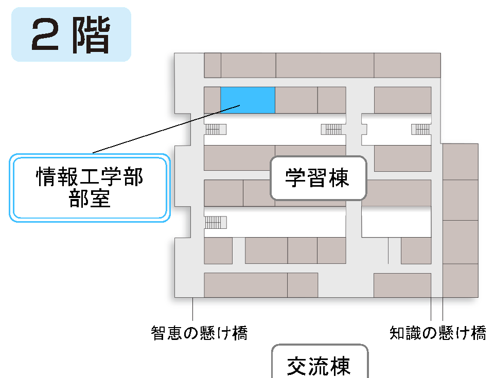

情報工学部、略してJK。主にプログラミングをしています。
もともとは競技プログラミングのみでしたが、最近はUnity等でゲームを制作したり、任意の言語でアプリケーションを作ったりもしています。
蒼煌祭では任意でゲームを製作し、展示しています。
月・水・木(祝日・休校日を除く)
マルチメディア実習室
© 2024 Yokohama Science Frontier High School/ Junior High School Computer Science club All rights reserved.